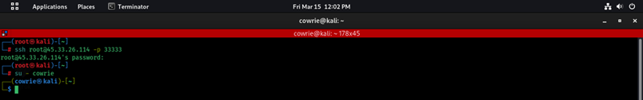
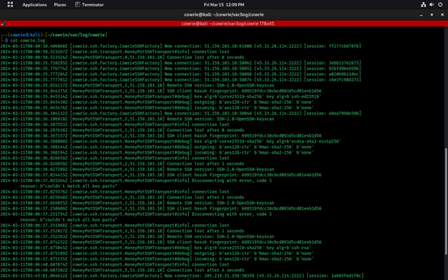

Cowrie Honeypot setup
The objective of this documentation is to outline the steps i took in setting up a Cowrie honeypot on a Linode remote server using Kali Linux.
Steps taken:
1. Created a Linode Instance:
- Choose the desired specifications for my Linode, including region, distribution (select Kali Linux), and turned the virtual machine on.

2. Connecting to the Linode via Terminal:
- Used SSH to connect to your Linode instance by entering the command:
( ssh root@45.33.26.114 ) and entered the password i set for the Server.
3. Configuring the Port and Changing it to "33333":
- I navigated to the Cowrie configuration file using a text editor:
( nano cowrie/etc/cowrie.cfg.dist )
- Search for the line containing LISTEN_PORT and change its value to to a preferred high port number which was “33333”.
- Save and exit the file.
4. Installing Cowrie:
- Update the package index
apt update
- Install Cowrie:
apt install cowrie
5. Creating a New User on Cowrie:
- Create a new user account for Cowrie:
cowrie-adduser
6. Logged back in to cowrie:
- Using the SHH access in the root terminal followed by the port number
(ssh root@45.33.26.114 -p 33333)
- Entered the Server password
- Logged back in to cowrie using root
(su - cowrie)

6. Checked the Log for new connections:
- Cowrie logs are typically located in /var/log/cowrie/.
- Used the cat command to view the logs:
(cat cowrie.log)

7. Starting the Cowrie Service:
- Start the Cowrie service:
service cowrie start